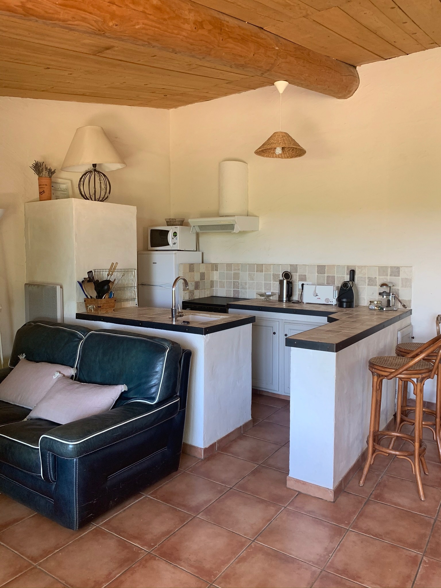
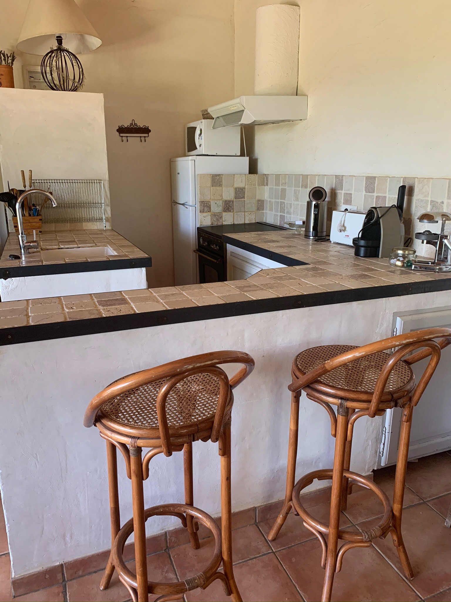
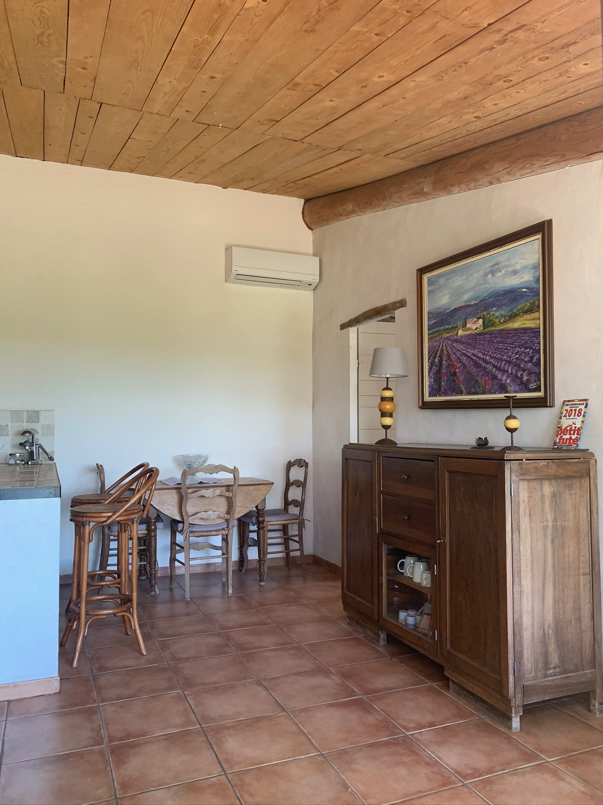
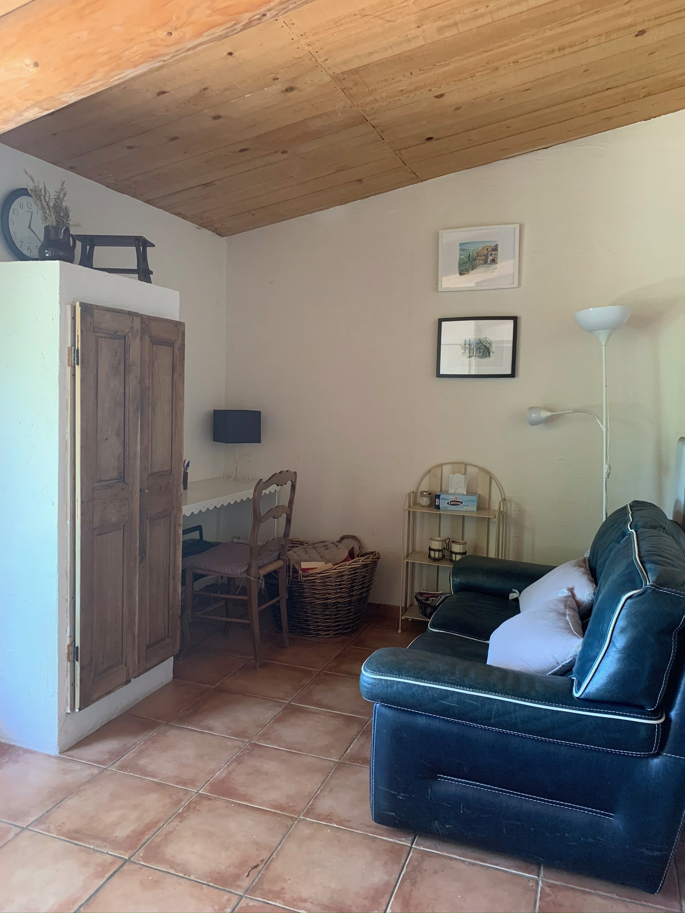
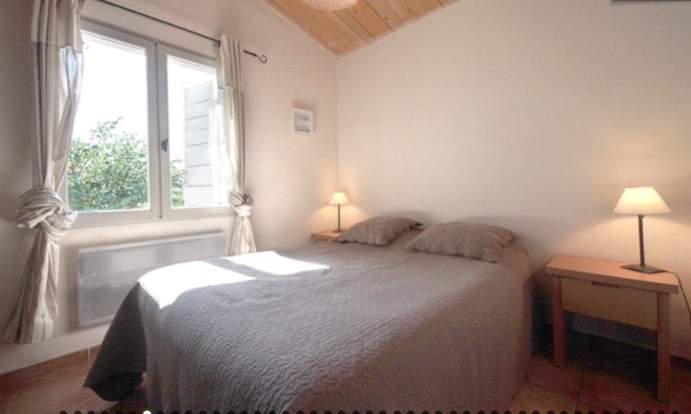
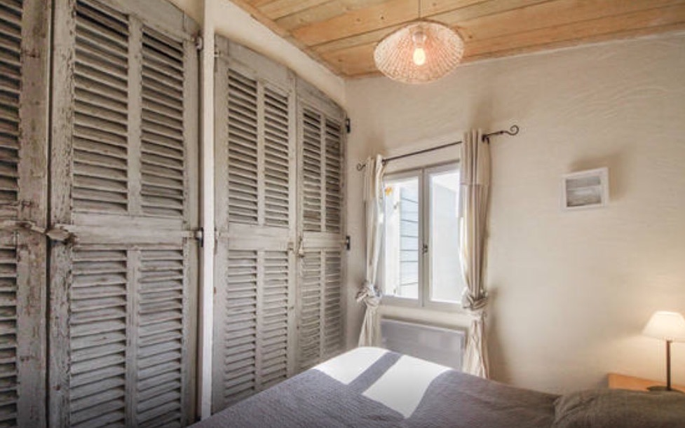

Visite guidée
Le Gîte
Un cadre luxueux, des prestations de qualité, des meubles anciens, et une décoration typiquement provençale
Un cadre luxueux, des prestations de qualité, des meubles anciens, et une décoration typiquement provençale
Un vaste séjour lumineux, ouvert sur le paysage, avec cuisine américaine entièrement équipée.
Chambre avec literie de haute qualité réglable électriquement, grands placards, douche à l'italienne et WC indépendant.
Lave-vaisselle, lave-linge, cuisinière, four à pyrolyse, micro-ondes, réfrigérateur, hotte, cafetière Nespresso...
Gîte entièrement climatisé pour votre confort en toute saison.
Connexion internet haut débit disponible dans tout le gîte.
Pierre, marbre, grès, bois... Meubles anciens et décoration typiquement provençale.
Découvrez les espaces intérieurs confortables et chaleureux de la Bastide des Jonquets.

Pièce à vivre & cuisine ouverte
Cuisine équipée
Séjour lumineux, ouvert sur le paysage Entrée sur la terrasse ensoleillée
Entrée sur la terrasse ensoleillée

Salle à manger & décoration provençale
Chambre lumineuse avec literie de qualité
Fenêtre avec vue sur le jardin salle d'eau provençale
salle d'eau provençale
 Grands placards intégrés
Grands placards intégrés